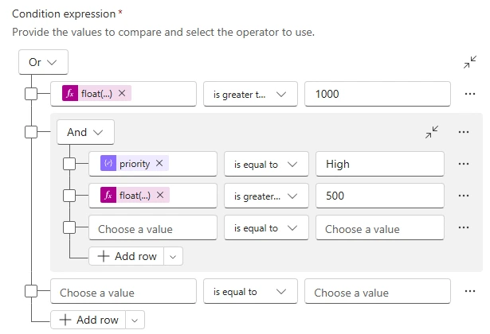
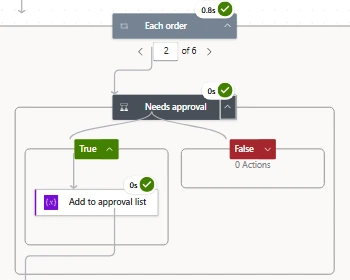
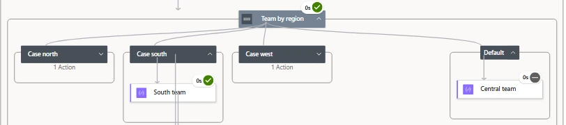
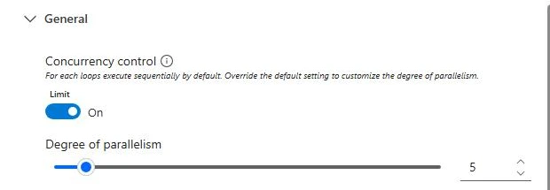
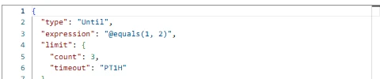

- Power Automate
- Level 1 · Foundations · 6 of 7
Conditions, Switch and loops: the complete guide
A flow runs its steps top to bottom. Four actions change that: Condition and Switch choose a path, Apply to each and Do until repeat steps. Every section below follows the same path: what it is → why you'd use it → flow diagram → the demo's real values → screenshot → expressions → watch out.
The four actions at a glance
Which one do I need?
The demo: six orders
One demo flow is used in every section. The data is messy on purpose, the way real data is:
[
{ "id": 1, "amount": 250, "region": "North", "priority": "High" },
{ "id": 2, "amount": "1200", "region": "south", "priority": null },
{ "id": 3, "amount": 80, "region": "East" },
{ "id": 4, "amount": 4500, "region": "West ", "priority": "Low" },
{ "id": 5, "amount": 600, "region": "North", "priority": "High" },
{ "id": 6, "amount": 640, "region": "Central", "priority": "Low" }
]- Order 2's amount is text, and its region is lower case.
- Order 2's priority is null; order 3 has no priority at all.
- Order 4's region ends with a space.
Condition: if / else
How a Condition works
The demo rule and its values
An order needs approval when the amount is over 1,000, or it's High priority with an amount of at least 500.
The demo rule, order by order
| Order | Amount | Priority | > 1000? | High and ≥ 500? | Branch |
|---|---|---|---|---|---|
| 1 | 250 | High | no | no | False |
| 2 | "1200" | null | yes | no | True |
| 3 | 80 | none | no | no | False |
| 4 | 4500 | Low | yes | no | True |
| 5 | 600 | High | no | yes | True |
| 6 | 640 | Low | no | no | False |
Orders 2, 4 and 5 take the True branch, so NeedApproval ends as [2, 4, 5].
How it looks in the designer
Rows are joined with Or; the second row is a group joined with And:

And in the run, order 2 (iteration 2 of 6) took the True branch:

Operators and the functions behind them
Each operator in the designer is an expression function. You'll need the function when you write conditions in expressions, filters or if().
| Operator | Function | Example (true) |
|---|---|---|
| is equal to | equals(a, b) | equals('High', 'High') |
| is not equal to | not(equals(a, b)) | not(equals('Low', 'High')) |
| is greater than | greater(a, b) | greater(4500, 1000) |
| is greater or equal to | greaterOrEquals(a, b) | greaterOrEquals(600, 500) |
| is less than | less(a, b) | less(80, 1000) |
| is less or equal to | lessOrEquals(a, b) | lessOrEquals(1000, 1000) |
| contains | contains(text or list, value) | contains('Invoice 2048', '2048') |
| does not contain | not(contains(...)) | not(contains('Paid', 'Overdue')) |
| starts with | startsWith(text, value) | startsWith('ORD-1001', 'ORD') |
| does not start with | not(startsWith(...)) | not(startsWith('INV-9', 'ORD')) |
| ends with | endsWith(text, value) | endsWith('report.pdf', '.pdf') |
| does not end with | not(endsWith(...)) | not(endsWith('notes.txt', '.pdf')) |
| And / Or rows | and(x, y, …) / or(x, y, …) | and(true, true) |
| (no operator) is empty | empty(x) | empty(''), empty(null) |
The same rule as one expression
Code view shows how the rows are stored:

or(greater(float(items('Each_order')?['amount']), 1000), and(equals(items('Each_order')?['priority'], 'High'), greaterOrEquals(float(items('Each_order')?['amount']), 500)))| Piece | What it does |
|---|---|
items('Each_order')?['amount'] | The current order's amount from the loop. |
float(...) | Turns "1200" (text) into the number 1200. |
greater(..., 1000) | First half of the rule. |
and(equals(...'High'), greaterOrEquals(..., 500)) | Second half: both parts must be true. |
or(first, second) | True if either half is true. |
To use it, put the expression on the left of one row, choose is equal to, and type true on the right.
Only a value changes? Use if()
If both branches would run the same action with a different value, skip the Condition and use the if() function inside the field:
if(greater(float(items('Each_order')?['amount']), 1000), 'approval', 'auto')| Piece | What it does |
|---|---|
if(rule, a, b) | Returns a when the rule is true, otherwise b. Order 4 gives approval, order 1 gives auto. |
Watch out
- Text vs number: wrap amounts in
float()orint()before comparing. - Case: High isn't high. Use
toLower()on both sides. - Null and missing: use
?to read optional fields andcoalesce(x, 'default')before calling functions on them.
Switch: one value, many exact matches
Why Switch: the same routing, two ways
Three nested Conditions become one flat Switch: easier to read, and adding a region is one new case.
The demo value and its cases
Switch matches exactly, so the region is cleaned first with toLower(trim(...)):
toLower(trim(items('Each_order')?['region']))| Piece | What it does |
|---|---|
trim(...) | Removes spaces at the start and end: "West " becomes "West". |
toLower(...) | North, north and NORTH all become north. |
The demo value, cleaned and matched
| Order | Raw region | After trim() + toLower() | Case that runs |
|---|---|---|---|
| 1 | "North" | "north" | north |
| 2 | "south" | "south" | south |
| 3 | "East" | "east" | Default |
| 4 | "West " trailing space | "west" | west |
| 5 | "North" | "north" | north |
| 6 | "Central" | "central" | Default |
toLower(trim(region))In the run, order 2 (south) ran Case south; Default was skipped:

Watch out
- Case values must be fixed and unique: no expressions or dynamic content in a case.
- Exact match only: no ranges (over 1,000) and no or. Use a Condition for those.
- Up to 25 cases. More than that belongs in a lookup list.
- Always fill Default, even just to log the unexpected value (orders 3 and 6 land there).
Apply to each: repeat for every item
How Apply to each works
items('Each_order')6 orders = 6 iterations. In the run view each one is shown separately: 1 of 6, 2 of 6 …
The current item
| Function | Use it in | Demo value at iteration 2 |
|---|---|---|
items('Each_order') | Actions inside the loop named Each order | the whole order 2 object |
items('Each_order')?['region'] | Same | "south" |
item() | Select and Filter array (not loops) | the item that action is processing |
The loop's name goes in the quotes, with spaces as underscores. Name the loop before you write expressions; renaming it later breaks them.
Running iterations at the same time
By default iterations run one at a time, in order. In the loop's Settings you can turn on concurrency control and run up to 50 at once:

One at a time vs five at a time
Each block is one iteration (illustration). Faster, but iterations no longer run in order.
Don't change variables in a concurrent loop: two iterations can update the same variable at once and the result comes out wrong. In nested loops only the outer loop runs in parallel.
Collecting results without variables
Reference an action that's inside the loop from after the loop, and you get every iteration's output as one list, in item order, even from a concurrent loop:
Collecting results from a loop
outputs('Route') = all 6 lines, in order
Watch out
- Limit: 100,000 items per loop (5,000 on the Low performance profile). Filter first.
- Cost: every action inside runs once per item. 2 actions × 6 orders = 12 runs, plus the loop.
- No break: the loop always visits every item. Use Filter array first to loop only over the items you need.
- Only transforming or filtering? Use Select or Filter array instead of a loop (Level 2).
Do until: repeat until a rule is true
How Do until works
Running ≥ 3000The rule is checked after the actions, so they always run at least once.
The demo, pass by pass
The demo, pass by pass
| Pass | Adds | Running | Stop rule |
|---|---|---|---|
| 1 | 250 | 250 | false → again |
| 2 | 1200 | 1450 | false → again |
| 3 | 80 | 1530 | false → again |
| 4 | 4500 | 6030 | true → stop |
4 passes, then the rule is true. The run view shows 1 of 4 to 4 of 4.
The settings

| Setting | Default | Maximum / format |
|---|---|---|
| Count | 60 passes | 5,000 |
| Timeout | PT1H (1 hour) | ISO 8601 duration, e.g. PT10M = 10 minutes |
Expressions used
greaterOrEquals(variables('Running'), 3000)| Piece | What it does |
|---|---|
variables('Running') | The running total, raised by Increment variable in each pass. |
greaterOrEquals(..., 3000) | The stop rule. When true, the loop ends. |
float(outputs('Orders')?[variables('Index')]?['amount'])| Piece | What it does |
|---|---|
outputs('Orders') | The list of orders. |
?[variables('Index')] | The order at position Index (0, 1, 2 …). Index goes up by 1 each pass. |
?['amount'] / float() | Its amount, as a number. |
Watch out
- A limit stop still shows Succeeded. After the loop, check the rule yourself: the demo's
less(variables('Running'), 3000)is false, so the rule (not a limit) ended it. - A variable can't be set from itself. Use Increment variable, as the demo does.
- When waiting for something, put a Delay inside the loop, and make sure count × delay fits the timeout.
iterationIndexes('Loop_name')gives the pass number (from 0), only inside a Do until.
Bonus: parallel branches
Not a loop, but often confused with one. Branches started from the same step run at the same time; a step after all of them waits for every branch. Use them for independent work, such as notifying two teams.

New to this? Start from the basics optional
Branch: one path the flow can take. Only one branch of a Condition runs per decision.
Iteration / pass: one run through a loop's actions.
Expression: a small formula, such as greater(x, 1000), worked out while the flow runs.
Build it step by step optional
- Add a Compose Orders with the demo data, and three variables: NeedApproval (Array,
[]), Running (Float, 0), Index (Integer, 0). - Add Apply to each Each order over
outputs('Orders'). - Inside: a Condition Needs approval (Or, plus an And group, as in the screenshot). In True, Append to array variable NeedApproval with the id.
- Inside: a Switch on
toLower(trim(items('Each_order')?['region']))with cases north, south, west, and a Compose in Default. - Inside: a Compose Route with an
if(). - After it: Apply to each Score in parallel with concurrency 5 and a Compose Score.
- Then a Do until with rule
greaterOrEquals(variables('Running'), 3000), count 10, timeout PT10M; inside, Increment Running by the order amount and Increment Index by 1. - Finish with a Compose Summary and test. Step through iterations to watch the branches.
Common mistakes
- Comparing text with numbers. Convert with
float()first. - Case and spaces breaking a Switch. Clean the value with
toLower(trim()). - A Switch with an empty Default, so unexpected values do nothing silently.
- Concurrency on a loop that changes variables.
- Looping only to transform or filter. Use Select or Filter array.
- Trusting a Do until's Succeeded without checking whether its rule is actually true.